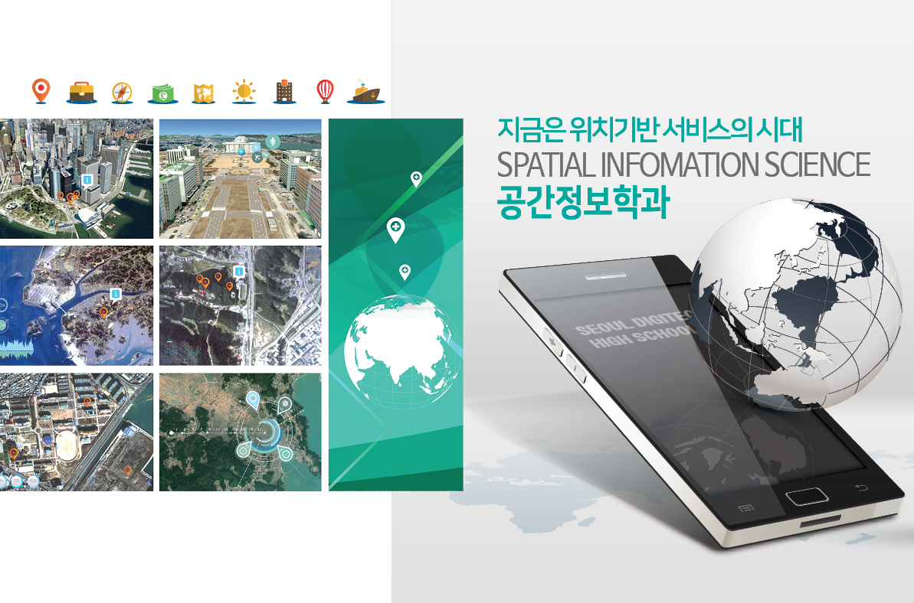
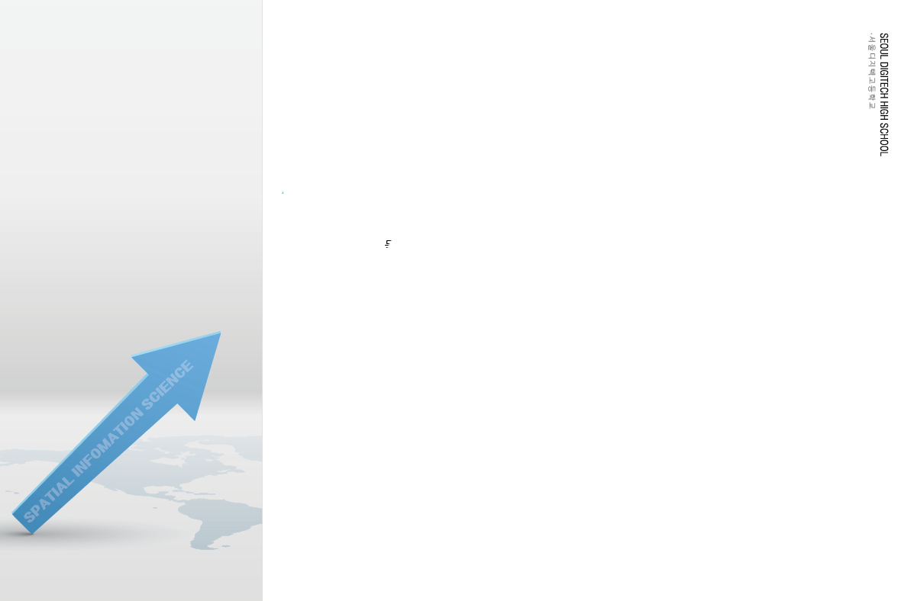

학과소개
공간정보
App/Web 개발
공간정보
데이터처리
공간정보
지도서비스 활용
취득자격증
21세기는 중심 위치기반 서비스의 생활화시대
교육분야 : 공간정보 Web,App 개발, 공간정보 데이터처리, 공간정보 지도서비스, 오픈소스
공간정보 관련 콘텐츠(Web, App, VR, AR 등)를 생산하는 고급 전문가 육성
목표 : 공간정보 Open API를 활용하여 생활속의 공간정보 App/Web 개발
교과 : 공간정보의 이해, 공간정보 자바프로그래밍, 공간정보 웹프로그래밍 공간정보 모바일 프로그래밍
목표 :공간정보 데이터의 다양한 유형과 제작방법을 익히고, 공공기관에서 제공하는 데이터를 수집하여
공간정보를 구축
교과 : 공간정보 데이터베이스, 공간정보프로젝트실무
[PostgreSQL, DA#]
목표 : 위성데이터처리, 공간정보 분석기법등을 익히고 이를 게임 및 실생활에 필요한 공간정보로 활용
교과 : 위성영상처리, 공간정보 응용, Open Source S/W
[QGIS, AreGIS]
정보처리기능사,ITQ,웹디자인기능사,지도제작기능사,빅데이터분석전문가
MAIN PAGE
SMARTSPACE